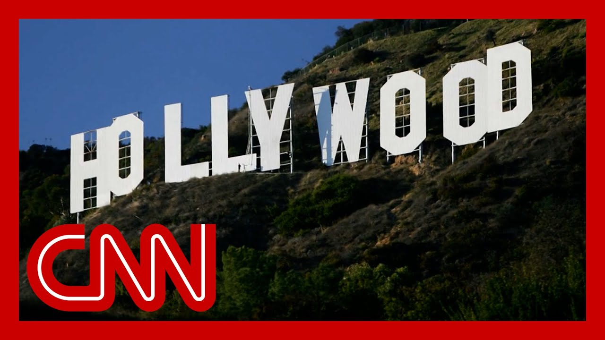

来B站一起耍【Global每日英语简报】
【好莱坞因特朗普对电影行业的关税计划而震动】
Summary: President Trump unveils new tariffs targeting foreign-made films, plans to meet with American film industry representatives. CNN's Kristen Holmes reports from the White House, noting confusion over implementation due to globalized production. Trump claims the U.S. movie industry is "dying fast," but later softens his stance, acknowledging potential harm. Analysts question the political wisdom of his messaging amid rising costs for consumers.
摘要： 特朗普总统宣布针对外国电影的新关税，计划与美国电影业代表会面。CNN的克里斯滕·霍姆斯从白宫报道，指出由于全球化制作，实施细节尚不明确。特朗普称美国电影业"迅速衰亡"，但随后态度软化，承认可能损害行业。分析人士质疑其在消费者成本上升背景下传达信息的政治策略。

⏱️ Estimated Reading Time: 17 min
President Trump unveiling a fresh set of tariffs today, this time on the movie industry.
特朗普总统今日宣布新一轮关税，这次针对电影行业。
He says he's soon going to meet with representatives from the American film industry to discuss his plan to apply new tariffs to foreign made films.
他表示将很快与美国电影业代表会面，讨论对外国电影征收新关税的计划。
Let's bring in CNN's senior white House correspondent, Kristen Holmes, who is live for us outside the white House.
现在连线CNN驻白宫资深记者克里斯滕·霍姆斯，她在白宫外为我们现场报道。
Kristen, of course, back after having a baby.
克里斯滕刚休完产假归来。
And we're thrilled to have you here in the arena for the first time, Kristen, thank you so much.
我们非常高兴首次在演播室见到你，克里斯滕，非常感谢。
This is like another example, right, of the president continuing this push on tariffs which he is, you know, obviously very personally invested in.
这像是总统推动关税的又一例证，他显然对此非常执着。
But it seems very unclear how this one would actually work.
但目前尚不清楚具体如何实施。
Yeah. That's right.
是的，没错。
This is an industry that has a lot of ins and outs.
这个行业错综复杂。
And the way that this would work is really questionable, because it's not as though you're just taxing one product that is made in one place.
具体操作方式存疑，因为电影并非单一地点生产的商品。
You're talking about a movie which, as we know, a lot of the different production houses are scattered across the globe.
众所周知，电影制作涉及遍布全球的多个制作方。
They have different places that they have been places that things are edited.
拍摄和剪辑可能分散在不同地区。
So how you actually do this is really there's there's a lot of questions now.
因此实际操作存在诸多疑问。
This is what he said.
以下是他的原话。
He posted this on Truth Social.
他在Truth Social上发文称：
He said the movie industry in America is a is a dying very fast death.
"美国电影业正在迅速衰亡。"
Excuse me, is dying a very fast death.
抱歉，是"正在迅速衰亡"。
Other countries are offering all sorts of incentives to draw our filmmakers and studios away from the United States.
其他国家正提供各种优惠吸引我们的电影人和工作室离开美国。
We want movies made in America.
我们希望电影在美国制作。
Kevin Liptak, our senior white House reporter, did learn that Donald Trump had dinner or met with actor Jon Voight over the weekend.
白宫资深记者凯文·利普塔克获悉，特朗普上周末与演员乔恩·沃伊特共进晚餐。
Who is one of his liaisons to Hollywood, a big Trump supporter.
沃伊特是特朗普在好莱坞的联络人之一，也是其忠实支持者。
So that could have played into this.
这可能是影响因素之一。
It's a factor.
确实是个因素。
But we also heard Donald Trump kind of seeming like he might be walking this back a little bit when he was just asked a question about it.
但特朗普被问及此事时似乎有所退让。
Take a listen.
请听这段录音。
Hollywood doesn't do very much of that business.
"好莱坞相关业务并不多。"
They have the nice sign and everything's good, but they don't do very much.
"他们有漂亮的标志，一切看起来不错，但实际业务很少。"
A lot of it's been taken to other countries and big proportion, and I'm actually going to meet with some because, you know, there's some advantage I guess, and I'm not looking to hurt the industry.
"大部分业务已转移到其他国家，我将与相关人士会面，因为可能存在某些好处，我不想伤害这个行业。"
I want to help the industry.
"我想帮助这个行业。"
So you can hear that clearly.
可以清楚听到。
He had talked to somebody who said it might hurt the industry because as he said, they didn't want to hurt the industry.
有人提醒他这可能损害行业，因此他表态不愿造成伤害。
That there could be some advantages.
可能存在某些好处。
As we know, there are a lot of advantages to these various productions being filmed overseas, like tax incentives.
众所周知，海外拍摄有诸多优势，比如税收优惠。
So it's interesting to see where this actually goes again, possibly making it a lot more expensive for American companies to make movies to then have, you know, sell to American consumers.
后续发展值得关注，这可能大幅增加美国公司制作并面向国内消费者销售电影的成本。
Kristen Holmes, thank you.
谢谢克里斯滕·霍姆斯。
Great to see you.
很高兴见到你。
Hopefully we'll see you again soon.
期待下次再见。
Thank you.
谢谢。
All right.
好的。
So with no end in sight for Trump's trade war with China the president is doubling down on this cheerful Christmas in July message for Americans.
随着中美贸易战持续，总统在七月向美国人传达"欢乐圣诞"讯息时态度更趋强硬。
I'm just saying they don't need to have $30 dolls.
"我只是说他们不需要30美元的娃娃。"
They can have three.
"可以有3美元的。"
They don't need to have 250 pencils.
"不需要250支铅笔。"
They can have five.
"5支就够了。"
All I'm saying is that if you do that a young lady and ten year old girl nine year old girl, 15 year old girl doesn't need $30 dolls.
"我的意思是，10岁、9岁或15岁的女孩不需要30美元的娃娃。"
She can be very happy with 2 or 3 or 4 or 5.
"2到5美元的娃娃也能让她们很开心。"
I think he missed the memo that 15 year old girls these days just want, what's the elephant skin care?
"他可能不知道现在15岁女孩想要的是大象护肤品？"
I'm not cool enough to know what Elephant is.
"我不够时髦，不知道'大象'是什么。"
Thank you. You must have a daughter in this age range.
"谢谢，你肯定有这个年龄段的女儿。"
I do. Okay, here you go.
"是的。好吧，继续。"
And not dolls. But.
"而且不是娃娃。但是..."
Hey, Lulu, you and I were on this set at the end of last week.
"嘿，露露，我们上周就在这个演播室。"
And we'll let these guys argue about whether or not this matters in a second.
"先让他们讨论这事是否重要。"
But, one of our friends of the show was arguing this comment was going to be lost in the noise.
"但节目的一位朋友认为这番言论会被淹没。"
That may have been true if Trump attended that one time, but he said it that time and then a second time.
"如果特朗普只说一次或许如此，但他重复了两次。"
And, I mean, the Wall Street Journal wrote it this way, quote, past presidents have urged voters to tighten their belts because of war, pestilence, natural calamity, economic contagion or their predecessors mistakes.
"《华尔街日报》写道：'以往总统因战争、瘟疫、自然灾害、经济危机或前任错误而呼吁选民节衣缩食'"
Mr. Trump is the first to do so because of his own policy decisions and his stubborn insistence on sticking with them.
"特朗普是首位因自身政策且固执坚持而如此表态的总统。"
In Mr. Trump's America, you get $2 dolls, only you pay more, and you'd be sure to thank the man in the handmade silk tie.
"在特朗普的美国，你得到2美元娃娃却支付更多，还得感谢系手工丝绸领带的那位。"
All the way out.
"彻底完了。"
Well, enough said.
"好吧，无需多言。"
I don't think I can top that.
"我无法超越这个评价。"
Yes. I felt this was going to be a big deal also, because it would have been malpractice on the Democrats side if they hadn't made it a big deal.
"是的，我也认为这事影响重大，因为民主党若不借题发挥就是失职。"
So just that alone.
"仅此一点就够了。"
But but but I will say this, the way that this is being portrayed is that everyone is rich in America, and they're going to have 30 dollar dolls and you can just have 2 or 3.
"但当前舆论呈现的方式暗示所有美国人都很富裕，能买30美元娃娃，现在只能买2美元的。"
But the fact is that there are a lot of kids who aren't and a lot of families who aren't and if dolls are more expensive, it might mean that they get no dolls.
"事实上很多孩子和家庭负担不起，若娃娃涨价，可能意味着他们什么也得不到。"
So it's not just this idea of like, everyone is just crazy mad and buying as much as they can.
"所以不仅是'人们疯狂购物'的问题。"
Which, by the way, America was built on, it's the capitalist system, but it's also this idea that there are a lot of people who can't afford things.
"虽然美国建立在资本主义体系上，但现实是很多人无力消费。"
And if things are more expensive that means that maybe Little Jim or Little Susie might not get their dolls that they want because they're action figures.
"商品涨价可能导致小吉姆或小苏西得不到想要的动作玩偶。"
This is not just little girls. Little boys like dolls.
"不仅是女孩，男孩也喜欢玩偶。"
Oh, I have a lot of Spider-Man dolls.
"我就有很多蜘蛛侠玩偶。"
Matt Corman, I mean, this, I just, I, I mean, so I cut my teeth, as you know, covering Mitt Romney's campaign, who famously once said that corporations are people.
"马特·科尔曼，我当年报道罗姆尼竞选时，他著名言论'公司即人'引发轩然大波。"
And that was very, you know, did not go over very well.
"你知道，这话反响极差。"
He he had a number of, of flashbacks.
"他有过多次类似失言。"
Right? Yeah.
"对吧？是的。"
But he was also there helping run policy for that campaign.
"但他当时协助制定竞选政策。"
And in those instances when he would say things like that or any candidate that's not Trump you all scrambled to correct it.
"若是其他候选人（非特朗普）说这种话，你们会急忙澄清。"
And, you know, he I think, still believes the point that he was trying to make.
"我认为他仍坚持当初的观点。"
But there was an understanding that politically this was not really the best thing to do.
"但政治上这并非明智之举。"
I never thought in my life I would hear a Republican politician making this argument, like telling little kids they had to have less because of something that that you did.
"从未想过会听到共和党人告诉孩子'因为政策你们只能拥有更少'。"
From a strictly like winning elections perspective you know, I, I hear you and I was surprised that I was surprised to hear it.
"纯粹从选举角度...我明白你的意思，听到这种言论我很惊讶。"
I think on Sunday, I was surprised you're kind of as a repeat thing.
"周日首次听到时已很意外，没想到他重复强调。"
And then the third time on Air Force One, right?
"第三次是在空军一号上对吧？"
Yeah.
"是的。"
And I think one of the things like whether it's politicians I talked to or like corporate leaders like you always want to emphasize the solution.
"无论是政客还是企业领袖，都应强调解决方案。"
You always want to emphasize the positive.
"始终聚焦积极面。"
And it helps if there is medicine to be taken or there's bad news somewhere in an answer or in a decision, in a circumstance.
"即便需要接受苦药或存在坏消息时也应如此。"
Emphasizing the positive and emphasizing the solution helps the listener and just people you're dealing with understand it.
"强调积极面和解决方案有助于听众和理解。"
It puts a better spin in the conversation.
"能让对话更顺畅。"
So leading with the negative and leading with what you're not getting as opposed to what you are getting, or you could be getting the benefits of this, I think, is an interesting tactic.
"因此以负面信息开场，强调'不能得到什么'而非'可能获益'，是种有趣策略。"
And one that like when I was in, interest it.
"我个人很感兴趣。"
It reflects the reality of the situation we could be in later this year.
"这反映了今年晚些时候可能面临的现实。"
And the president's repeatedly said that, you know, there may be less supply of some things, that we may see higher prices.
"总统多次表示某些商品可能短缺，价格可能上涨。"
And I think this is sort of the reflection of the reality of the policies carrying out.
"我认为这反映了政策实施的现实影响。"
And I think it's because he's hearing from some of his advisers, look, this is probably going to happen if we continue down the path that we're continuing now.
"可能是因为顾问告诉他：'若坚持现行政策，这些很可能发生'。"
That I don't think it's going to change how the president thinks about these issues, because if there's one consistent he's had in his career over many years, it's tariffs.
"但这不会改变总统的想法，因为关税是他多年来的核心主张。"
He really believes in that policy.
"他坚信这一政策。"
Well, and I mean Adrian Elrod, you're also a political strategist.
"阿德里安·埃尔罗德，你也是政治策略师。"
And frankly Democrats have occasionally said tariffs are a policy that could have positive results in certain circumstances.
"坦白说，民主党人也曾承认关税在特定情况下可能有利。"
Right. I've talked to Elizabeth Warren was here saying, yes, there are circumstances where this would work out, etc..
"比如伊丽莎白·沃伦就说过某些情况下关税有效。"
But again, there is it's one thing to say, you can't have any dolls.
"但'不能有任何娃娃'是另一回事。"
Like he could be out there saying well, you know what? This Christmas might be a little bit tough, but you know what?
"他本可以说：'这个圣诞节可能艰难，但...'"
What I'm doing is going to give your dad your mom a better job in a couple of years.
"'我的政策几年后会让父母找到更好的工作。'"
And you may not be able to buy the lawnmower this Christmas, but you can buy maybe in two years from now in a very much like lower price.
"'今年可能买不起割草机，但两年后能用更低价格购买。'"
I mean, that would probably be a better way to frame this.
"这样表述可能更妥当。"
I mean, look, a couple of things I think you made a really good point by saying that it would have been malpractice for Democrats not to take advantage of this.
"你说民主党若不利用此事就是失职，这点很对。"
That's absolutely the case.
"确实如此。"
And thank goodness that we have and we are and we're continuing wasn't a given.
"庆幸的是我们正在且将持续行动——这本非必然。"
And I completely agree with you.
"我完全同意。"
Number one.
"第一点。"
But number two, look, this is just another anecdote that I think you'll see more and more from as we get closer to the midterms.
"第二，随着中期选举临近，这类事例会越来越多。"
You'll see a lot of members of Congress, Democrats who are running either for reelection or as challengers who will use this in an ad basically saying, like, Donald Trump wants to take away X, Y, and Z from you, including your kids dolls.
"你会看到许多民主党议员或候选人在广告中说'特朗普想夺走你们的东西，包括孩子的娃娃'。"
Also, by the way, if only 12 year old kids could vote this might also help.
"顺便说，如果12岁孩子有投票权，这事影响更大。"
It's just it's a little bit it's such an evocative example.
"这个例子太有煽动性了。"
It is only he can get away with.
"只有他能逃脱后果。"
Like, even if you don't have kids.
"即使你没有孩子。"
Like you were once a kid who celebrated some holiday where you got a gift.
"你也曾是在节日收到礼物的孩子。"
Really get away with it?
"真能逃脱吗？"
I guess that's the bit.
"我想这就是问题所在。"
That's the question I don't know.
"我无法回答。"
Political gravity.
"政治引力。"
Right. It's it's always been the big question around around Donald Trump and this particular issue.
"对，这始终是围绕特朗普及其政策的核心问题。"
This hasn't come up before.
"此前从未出现这种情况。"
Will you actually telling the American people and their children you're not going to have enough.
"直接告诉美国民众和他们的孩子'你们将一无所有'。"
He may not have to determine what the cost of it will be, but Republicans in the House and Senate will, in the midterm elections next year if there is an impact on prices or some other economic constraints.
"他或许无需承担代价，但若物价或其他经济压力受影响，明年中期选举中的共和党议员将承受后果。"